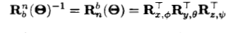

Intro
这个博客做出来只是兴趣使然，明明有很多工作要做，但还是要搞这些花里胡哨的东西。
文章部分应该是更新有关科研的内容，也有可能是自己感兴趣的一些工程内容，具体情况看心情。😀
总而言之，来看看文章吧
这个博客做出来只是兴趣使然，明明有很多工作要做，但还是要搞这些花里胡哨的东西。
文章部分应该是更新有关科研的内容，也有可能是自己感兴趣的一些工程内容，具体情况看心情。😀
总而言之，来看看文章吧
关于Harmonican：
一个普通的研究生，目前研究方向是故障诊断与容错控制,
属性是：音乐宅、重度二次元、无聊的骑行者。
喜欢的音乐：HE∀ting Sφul、Blue bird、風の谷のナウシカ、紅蓮華等
喜欢的ACGN：Date a live、Naruto、大图书馆的牧羊人以及Date a live和Strike the blood并列
喜欢的特摄：奥特曼、假面骑士、铠甲勇士(最近也看了一部超级战队)
目前坐骑：永久CY-660(其实是想整辆摩托去西藏的)
Skew-Symmetry(斜对称)矩阵的定义
MATLAB实现
旋转矩阵求解


将旋转过程沿x,y,z轴分为三次进行，方向向量分别为[1, 0, 0]T，[0, 1, 0]T与[0, 0, 1]T，角度分别为φ，θ与ψ。由此可得三个旋转矩阵分别如下所示：
则
展开可得
而

展开可得

同时由于旋转矩阵的正交性，可得
相应的轨迹可由欧拉积分近似得到
在MATLAB中，由欧拉角求得旋转矩阵可使用函数angle2dcm()实现，示例如下
示例结果如下

角速度转移矩阵求解
设b-frame下角速度向量为ωbnb=[p, q, r]T,而n-frame下欧拉速度矢量(Euler rate vector)为Θ=[φ, θ, ψ]T，则可得如下关系
根据上述旋转过程（即分三次计算旋转过程） 则可得

左边展开可得
则欧拉姿态角的变化量（即欧拉速度矢量）为
角速度转移矩阵的MATLAB实现代码如下

总结，6自由度下b-frame到n-frame的转移矩阵计算分为线速度的变化以及角速度的变换，其动力学方程组可表示为向量(矩阵)形式，如下
具体MATLAB代码实现如下

A new path following method of AUV using line-of-sight with sideway
文章发表在2022 IEEE Bombay Section Signature Conference (IBSSC)
核心思想在于，基于六旋翼AUV的动力学与运动学模型，在视线(line of sight, LOS)制导法的基础上 提出了一种新的制导方法。事实上有任意侧向驱动能力的无人系统都可以使用这个制导法，或者在有侧向驱动能力的前提下才有可能使用 这种制导方法，整体来讲创新性一般。
LOSWS制导法的流程图如下所示

可以看到其实就是将航向角、艏向速度与侧向位移解耦分别用两个控制器控制
基于LOSWS制导法的路径跟踪示意图如下所示，大致分为三种情况：
1. 被控对象(AUV)在侧向支持区域外

2. 被控对象(AUV)在侧向支持区域内
3. 航向角与路径方向差距过大

By the way, 虽然图中有画出外部扰动，实际在仿真中并没有考虑到扰动问题
根据以上设计，在四种路径条件下进行了仿真测试，分别为：
1. 直线路径
2. 曲线路径(转弯角大于90°)
3. 曲线路径(转弯角等于90°)
4. 曲线路径(转弯角小于90°)


如果采用直接转向的方式，在某些情况下转向方向可能不是最优路径，如下所示

事实上，要解决这个很简单，只要根据最优转向调整一下方向即可，具体请见下图


最终结果的误差量化对比就不看了，没什么意思。
如果你对这个方法的源代码感兴趣的话，请联系作者，如果能引用一下这篇文章的话就再好不过了(虽然写的不怎么样)

Online Fault Diagnosis Using Bioinspired Spike Neural Network
文章发表在IEEE Transactions on Industrial Informatics ( Volume: 20, Issue: 9, September 2024)
先谈谈motivation，为什么要用SNN来做这件事呢？
首先，在故障诊断的过程中(尤其是实际场景中)，工况很可能是不断变化的，至少工况和在实验室中的工况有所不同，
这就意味着在实验室条件下训练得到的数据驱动模型在实际场景中就失效了。
那么，为了解决这类问题，基于迁移学习(Transfer Learning)做了许多跨数据域(cross data domain)的故障诊断方法，
包括但不限于Mapping，Model parameter transfer等等。
但是问题又来了，这些方法都要求，在实际场景(或者说是新的工况下)获取一些新的数据，对现有模型进行微调(Fine tune)。
虽然数据量不是很多，但是也加入了一个重训练的过程。
那么，有没有可能跳过这个重训练，去实现一个网络的在线学习呢？答案便是采用脉冲时间依赖可塑性学习法则。
基于这种仿生的学习法则，也就采取了仿生的SNN这种框架，具体实现过程如下：
先来看看整体框架，大致可以分为三大块：
1. 数据编码模块
2. 脉冲信号处理模块
3. 最终分类模块
其中脉冲信号处理部分，也就是SNN的主体，引入了脉冲时间依赖可塑性(Spike Timing-Dependent Plasticity, STDP)，
神经元的膜电位抑制以及膜电位阈值平衡机制。

那么开始进入第一个模块，脉冲编码模块。
可以看到脉冲编码主要分为三个部分，梅尔语谱图计算、归一化以及泊松脉冲编码。

首先是梅尔语谱图计算，这个操作是利用梅尔滤波器组对原始信号进行处理，将一维的振动信号转换为二维的时频信号
一方面进行了特征的提取，另一方面还实现了对噪声的抑制。
通过对滤波器组的设计，将我们不关心的那些噪声信号进行滤除，同时也增强了时频域的特征。


其次是归一化，这个简单，具体操作直接略过，为的是服务后续的泊松脉冲编码
最后是泊松脉冲编码，这是一种频率脉冲编码，核心思想在于将原本的脉冲激发率转换为激发概率。
简单来讲，原本的频率编码是将数值直接转换为激发率，例如：数值为0.5，若脉冲序列长度为1s，则激发频率设置为50Hz，
也就是在1s内激发出50个脉冲，若数值为0.3，则设置为30Hz，1s内激发出30个脉冲；
而泊松脉冲编码的情况则是，例如：数值为0.5，假设最大激发率为100Hz(或者说将激发的基本周期设置为10ms)，
则将激发概率设置为50%，那么1s内的激发次数则接近于50次(可能多，可能少)。
这么做将确定的频率转换为激发频率的概率，一定程度上增强了信号的鲁棒性。

接下来是SNN主体部分，这部分主要分为神经元模型、突触模型以及学习法则(STDP)
首先是神经元模型，采用带抑制信号的LIF模型，具体膜电位动力学模型如下

大致动力学行为就是，如果没有激励，则膜电位慢慢泄露(衰退)，有激励则增长一些，增长的数值与突触电导相关，
相应的，有抑制则下降。在膜电位达到阈值时，神经元会发射脉冲，并且电位回到静息电位。
其次是突触模型，突触的自我演化带有一个缓慢的衰退，具体的变化需要看STDP的在线更新。

然后是STDP，首先明确STDP想做的是什么。其实就是一个根据脉冲激发时间的奖励。
如果突触前脉冲先于后脉冲到达，这就意味着这种模式的信号是符合常理的。
打个比方，你妈喊你吃饭，
然后你去吃饭了，证明“你妈喊你吃饭”这个行为对“你去吃饭”这个行为是有正向指导作用的，那么对于这种情况就应该肯定，
也就是给予奖励；
但是如果在你妈喊你吃饭之前你就已经把饭吃完了，或者在吃饭了，这意味着“你妈喊你吃饭”这个行为对“你去吃饭”这个行为
没有正向指导作用，那么这两件事之间的联系就应该削弱，也就是给予惩罚。
具体可以参看下面的图片。


然而现在遇到了另一个问题，如果要将其运用到SNN中，我们不可能将所有的脉冲到达时间全部记录，然后再进行突触的更新，
一方面这很不效率，另一方面这件事做起来也不现实。
为此，采用了“迹”的方法来实现STDP的更新，具体请看公式：


随后讲到另一个概念，横向抑制，这又是怎么回事呢？
其实很简单，在某一个神经元的某个突触学到模式之后，向其他神经元发送一个抑制信号，并进入不应期，
这个概念从学术上来讲就是Winner-Takes-All(WTA)，赢者通吃；
如果从游戏上来讲就是，“让我独享经验”或者“一人我吃三路”，当然这不一定是一件坏事，因为我们不需要所有神经元突触
都去学习者一种模式，某个神经元突触的集中学习是一件好事。
那么膜电位阈值平衡机制又是怎么回事呢？
让我们来设想一个场景，假设某个神经元突触一直在学习，那么它就会变得无比“粗壮”，也就是说，
随便来一个激励就会激发这个神经元，然后WTA会让他独享经验，最后造成的结果就是，
只有他在学习，其他神经元无法学习了。
这是一定要避免的，虽然要集中学习，但是不能抢占所有的学习机会，于是我们规定：
如果你近期学习过一次，那么你的激发阈值便增加一些，在后续的过程中不那么容易激发，
也就是不那么容易学习了。
具体动力学行为请参考下列公式：

从直觉上来看，以上两个行为是矛盾的，一边让你集中学习，一边又让你不那么容易一直学习。
但是最终两者会达到一个动态平衡，使整体SNN慢慢优化到一个合适的状态。
那么综上所述，从直觉上来讲，STDP好像是work的，那么事实上呢？请看后面的结果。
具体在两个数据集上进行测试，一个是CWRU，一个是MFPT。直接来看结果：


可以看到效果还是不错的，在横向对比中虽然不是最佳，但是也处于前列。
当然这不涉及变工况，接下来让我们看看变工况下的效果如何：


效果最佳，没毛病，而且可以看到，相应的工况变化其实对我们提出的方法并无大的影响。
然后来瞧瞧横向抑制与膜电位阈值平衡机制的影响。


可以明显的看到，如果没有平衡机制，特征聚类的效果明显变差，而没有横向抑制的情况下，根本无章法可言。
这个故事告诉我们，打游戏不能太毒，要学会把球传给队友，光自己发育好没用啊！
最后来看看对噪声的抵抗效果，之前讲过，不论是梅尔滤波器组还是泊松编码，都对噪声有一定鲁棒性，那么实际上呢？

可以看到，即便是SNR=0dB的情况下，仍然达到了85%左右的准确率，这个效果还是不错的(应该吧？)， 总之，对噪声鲁棒性还是可以的。
以上就是这篇文章的全部内容，总体来讲创新性还不错，就是SNN的话题度还是不是很广啊。
如果你对源代码感兴趣的话请联系作者，如果能引用一下的话那就再好不过啦。
This is bold and this is strong. This is italic and this is emphasized.
This is superscript text and this is subscript text.
This is underlined and this is code: for (;;) { ... }. Finally, this is a link.